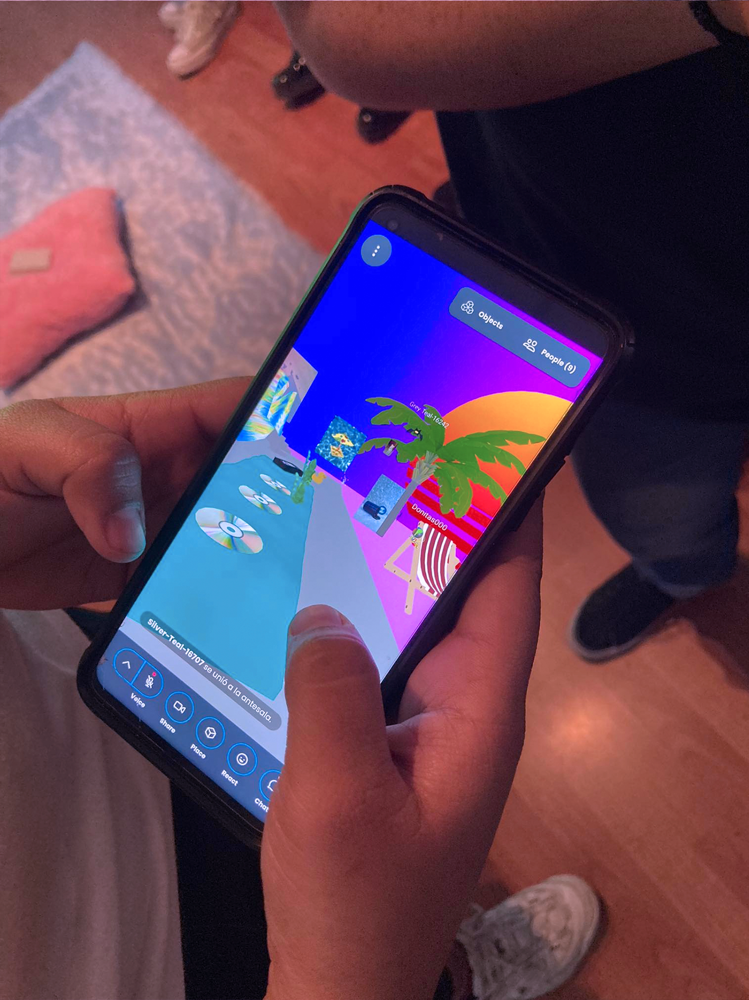
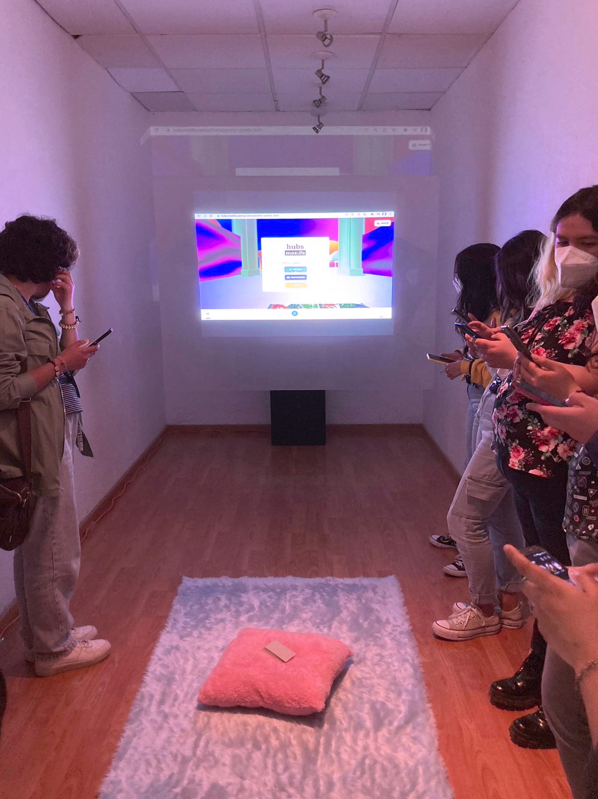
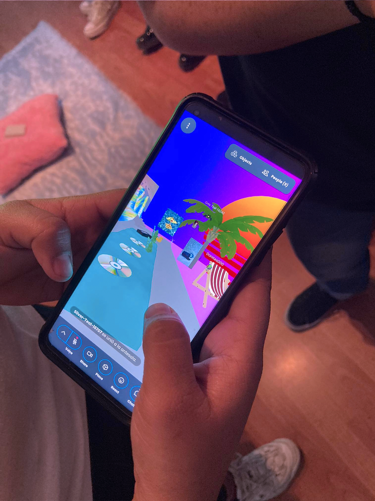
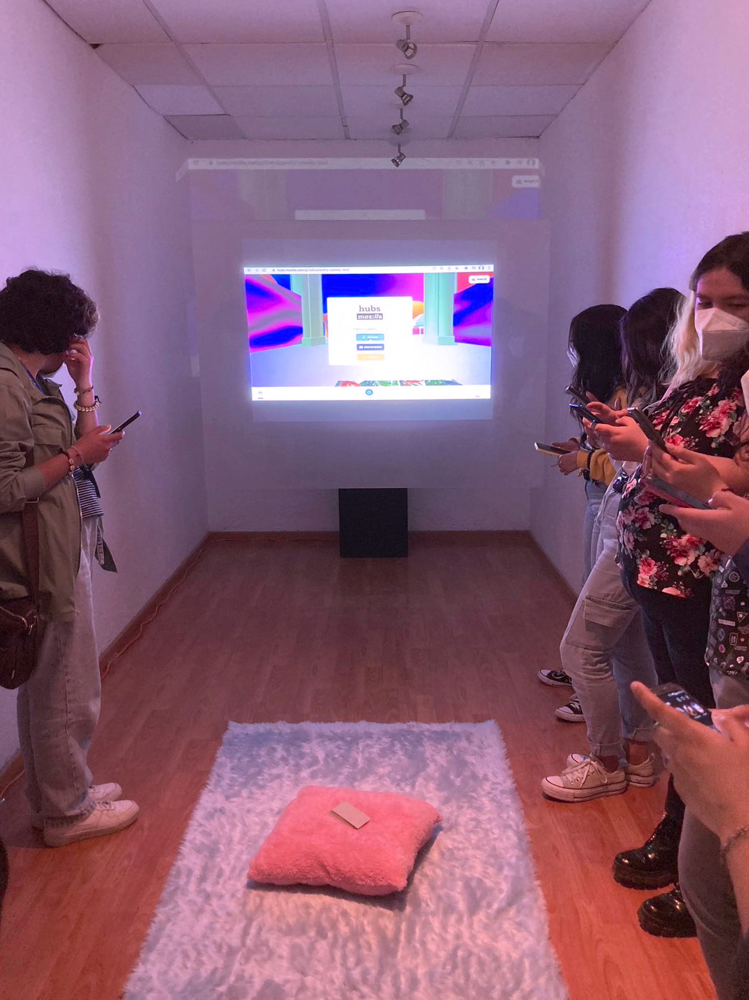

✧ 𝓓𝓪𝔂 𝓓𝓻𝓮𝓪𝓶 ✧ 𝟚𝟘𝟚𝟙
IR

Es así cómo nace DayDream es un espacio de realidad mixta para reunir comunidades en un espacio virtual compartiendo de manera libre, en esta sala de chat se pretende mostrar las piezas resultado de la investigación de las coaliciones entre los conceptos espacio, tiempo, percepción y realidad, que llevo desarrollando desde el 2018 con distintas técnicas de producción ahora con un giro hacia la investigación de la participación del público, espectador o usuario.
 




Day dream o soñar despierto es un concepto que utilizo para anteponer al público lo que sucederá en la actividad, el mundo en el que nos adentramos sucede estando despierto en una mezcla de realidad virtual, realidad aumentada en un encuentro con el mundo “real”, el visitante se adentra a mi subconsciente habita en el sueño que fabriqué con la intención de que interactúe, cree e imagine formando conexiones con sus propias experiencias.